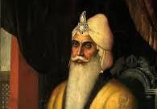

Sher-e-Punjab

Ranjit Singh, popularly known as Sher-e-Punjab or "Lion of Punjab", was the first Maharaja of the Sikh Empire, which ruled the northwest Indian subcontinent in the early half of the 19th century. He survived smallpox in infancy but lost sight in his left eye.
- Ranjit Singh's reign introduced reforms, modernisation, investment into infrastructure and general prosperity.
- His Khalsa army and government included Sikhs, Hindus, Muslims and Europeans.
Click here to open Sikh history
Click here to open Sikh history
Link for email.